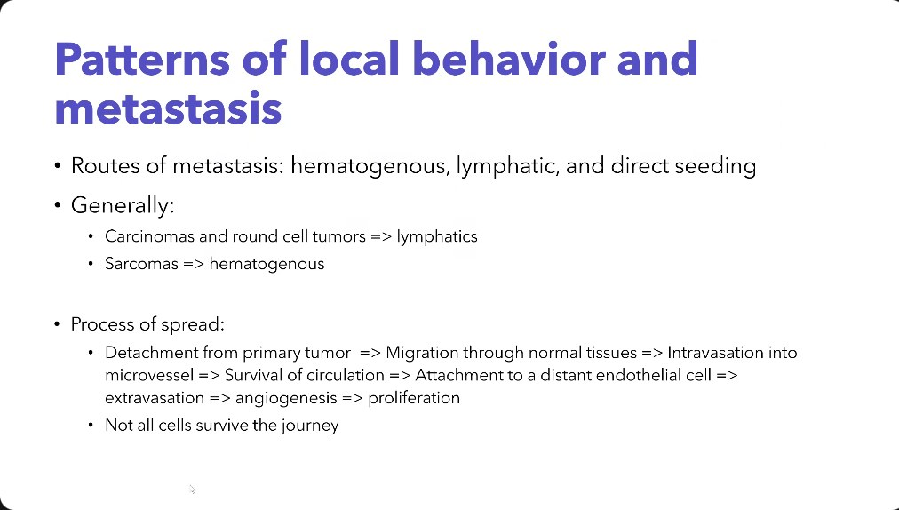
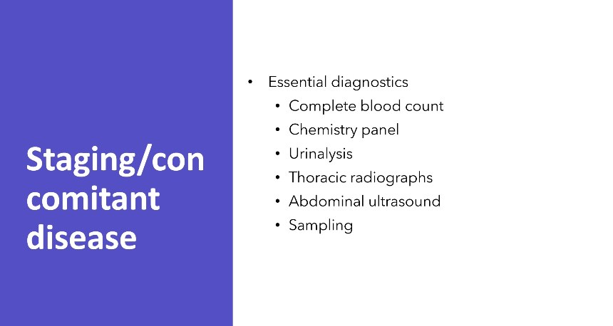
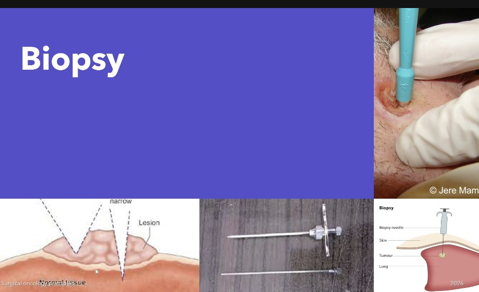
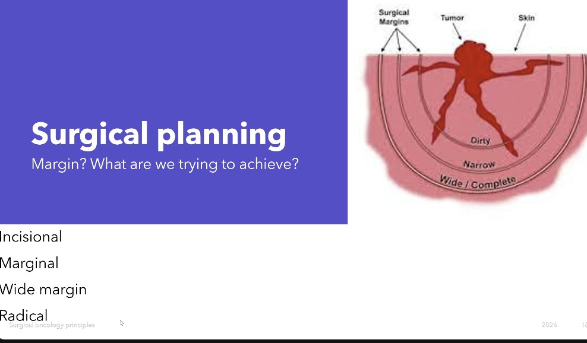
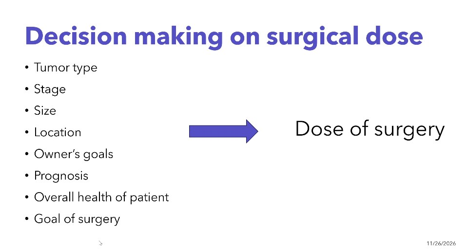

外科腫瘤學原則
Surgical Oncology Principles｜講者：府城宏醫師
2026 年 11 月 26 日｜聯盟獸醫教育中心 卓越講堂
資料來源標記：
📷 截圖 線上課程投影片截圖
✍️ 筆記 你的課堂筆記
💡 補充 整理者補充（教科書知識，非講者內容）
現場整理中：目前依上課時貼上的截圖整理，順序依截圖先後；之後有講義或錄音再補完。
現場整理中：目前依上課時貼上的截圖整理，順序依截圖先後；之後有講義或錄音再補完。
⭐ 本場重點（目前進度）
- 病史四件事：時間、位置、診斷／已做的檢查、已做的治療
- 理學檢查一定要做直腸觸診，並檢查局部淋巴結
- 腫塊描述：解剖位置、方向、大小、質地、是否可自由移動、疼痛與溫度、表面病灶
- 轉移途徑：血行、淋巴、直接播種
- 大原則：癌（carcinoma）與圓形細胞瘤 → 淋巴；肉瘤（sarcoma）→ 血行
- 不是每個腫瘤細胞都能完成轉移的整個過程
- 分期／共病基本檢查：CBC、生化、尿檢、胸腔 X 光、腹部超音波、採樣；進階：CT／MRI、顯影檢查、其他專科會診
- 切片要切得相對深，太淺可能拿不到完整資訊
- 單一切片常低估 STS 分級（一致率約 59–71%）：取 ≥2 個（中央＋周邊），切片低分級只當最低值
- 治療目標要和飼主共識：根治、緩和減積、輔助、前導；多種治療合併，一定要追蹤
- 手術劑量：切開／囊內 → 邊緣 → 廣泛 → 根治；切片疤要一起切掉
- 報告「乾淨」不等於安全：固定前上墨、標方向、釘平（不釘會縮 ~18%）；STS 三年復發 7%／乾淨但很近 23%／浸潤 42%
- 決定劑量：腫瘤種類、分期、大小、位置、飼主目標、預後、整體健康、手術目的
- 深部切緣看筋膜平面：Vet Surg 2022 Fascial plane mapping Part I–III（頸軀幹／前肢／後肢骨盆）
場次資訊
▾- 主題：Surgical oncology principles 外科腫瘤學原則。
- 講者：府城宏醫師。
- 形式：聯盟獸醫教育中心 卓越講堂（2026-11-26，線上）。
1. 病史：該問哪些問題？
▾
📷 腫瘤病患的病史要問四件事：
| 投影片 | 💡 實際要問的內容 |
|---|---|
| Time 時間 | 什麼時候發現的？長大的速度（幾天 vs 幾個月）？大小有沒有忽大忽小？ |
| Location 位置 | 長在哪裡？有沒有其他位置也有腫塊？ |
| Diagnosis／Diagnostics 診斷與已做檢查 | 之前做過細針抽吸（FNA）或切片嗎？結果是什麼？做過影像嗎？ |
| Treatment 治療 | 之前處理過嗎（手術、類固醇、抗生素、化療）？反應如何？是否為復發？ |
腫塊忽大忽小是肥大細胞瘤的典型病史（去顆粒化）。轉診前用過類固醇的肥大細胞瘤或淋巴瘤可能暫時縮小，影響大小判斷與細胞學、切片結果，所以治療史要問清楚。復發的腫瘤，第二次手術通常比第一次更難切乾淨。
2. 理學檢查
▾
- 📷 一定要做直腸觸診（投影片上特別用 ** 強調）。
- 📷 聽診。
- 📷 神經學與骨科評估。
- 📷 局部淋巴結！！
- 📷 描述腫塊／結節：
- 用解剖標記描述位置
- 方向（orientation）
- 大小
- 質地
- 是否可自由移動？
- 疼痛反應與溫度
- 表面病灶：潰瘍、脫毛、變色、色素沉著？
為什麼一定要直腸觸診：可以摸到肛門囊腺癌（常很小、飼主沒發現，可能合併高血鈣）、肛周腫瘤、直腸腫塊，以及腰下（內側髂）淋巴結腫大——這是後肢、會陰、肛門囊腫瘤的引流淋巴結。
描述腫塊：大小用游標卡尺量三個軸向、拍照並畫在體表圖上，方便手術規劃與追蹤；「固定於深層組織」代表可能侵犯筋膜或肌肉，會影響手術範圍。
神經與骨科評估：可以抓到骨腫瘤造成的跛行、脊椎或神經根腫瘤造成的疼痛與缺損，也是術後功能預期的基準線。
描述腫塊：大小用游標卡尺量三個軸向、拍照並畫在體表圖上，方便手術規劃與追蹤；「固定於深層組織」代表可能侵犯筋膜或肌肉，會影響手術範圍。
神經與骨科評估：可以抓到骨腫瘤造成的跛行、脊椎或神經根腫瘤造成的疼痛與缺損，也是術後功能預期的基準線。
3. 局部行為與轉移模式
▾
- 📷 轉移途徑：血行（hematogenous）、淋巴（lymphatic）、直接播種（direct seeding）。
- 📷 一般而言：
- 癌（carcinoma）與圓形細胞瘤 → 淋巴
- 肉瘤（sarcoma）→ 血行
- 📷 轉移的過程：
- 從原發腫瘤脫離
- 穿過正常組織移動
- 侵入微血管（intravasation）
- 在循環中存活
- 附著到遠處的血管內皮細胞
- 穿出血管（extravasation）
- 血管新生（angiogenesis）
- 增生
- 📷 不是所有細胞都能撐完這趟旅程。
這是「大原則」，有重要例外：口腔黑色素瘤、肥大細胞瘤常先轉移到淋巴結；滑膜肉瘤、組織細胞肉瘤也常有淋巴結轉移；反過來，部分癌也會血行轉移到肺。所以不論腫瘤類型，局部淋巴結都要評估。
直接播種的臨床意義：移行上皮癌（TCC/UC）可能沿 FNA 針道或手術切口播種；手術時要換器械與手套，避免把腫瘤細胞帶到乾淨的組織。
直接播種的臨床意義：移行上皮癌（TCC/UC）可能沿 FNA 針道或手術切口播種；手術時要換器械與手套，避免把腫瘤細胞帶到乾淨的組織。
4. 分期與共病評估
▾
📷 必要的基本檢查：
| 檢查 | 💡 目的 |
|---|---|
| 全血球計數（CBC） | 貧血、血小板減少、白血球異常；麻醉風險與副腫瘤症候群 |
| 生化 | 腎肝功能（麻醉與藥物代謝）、高血鈣（淋巴瘤、肛門囊腺癌）、低血糖（胰島素瘤、肝腫瘤） |
| 尿液檢查 | 腎功能、泌尿道感染；泌尿道腫瘤的線索 |
| 胸腔 X 光 | 肺轉移；建議三個角度（左右側躺＋腹背位） |
| 腹部超音波 | 腹腔轉移、腹內淋巴結、共病 |
| 採樣 | 原發腫瘤（FNA／切片）與局部淋巴結細胞學 |
📷 進階檢查（同一張投影片後半，截圖未存檔，僅文字）：
| 檢查 | 💡 目的 |
|---|---|
| CT／MRI | 手術規劃（腫瘤範圍、與血管神經的關係）、偵測小的肺轉移；MRI 用於神經系統與軟組織 |
| 顯影檢查（contrast study） | 例如消化道、泌尿道顯影，評估管腔內腫塊與阻塞 |
| 其他專科會診與檢查 | 例如心臟（術前心臟超音波）、眼科、神經科 |
分期的目的是決定能不能開、要開多大、手術能不能根治；共病評估則是確認病患撐不撐得過麻醉與手術。胸腔 X 光大約要 ≥5 mm 的結節才看得到，CT 敏感度較高，大型手術前（例如截肢、大範圍切除）常考慮做 CT。
5. 切片（Biopsy）
▾
- ✍️ 切片需要切得相對深，如果不夠深，可能沒辦法得到完整的資訊。
投影片上的幾種方式：punch 切片（皮膚、表淺腫塊）、楔形切片（wedge／incisional，左下圖：窄而深的楔形，從病灶延伸到正常組織交界）、針芯切片（Tru-cut、Jamshidi 骨髓／骨切片針）、影像導引針刺切片（右下圖：經皮穿刺肺腫瘤）。
為什麼要夠深：腫瘤表面常是潰瘍、壞死或發炎反應，太淺只會拿到這些組織，看不到腫瘤本體，也無法判斷侵犯深度。
切片原則：切口方向與位置要能在之後的根治手術整個切除（切片路徑視為被污染）；避免切開正常組織平面、避免只取壞死中心；病灶與正常組織交界處通常資訊最多。
為什麼要夠深：腫瘤表面常是潰瘍、壞死或發炎反應，太淺只會拿到這些組織，看不到腫瘤本體，也無法判斷侵犯深度。
切片原則：切口方向與位置要能在之後的根治手術整個切除（切片路徑視為被污染）；避免切開正常組織平面、避免只取壞死中心；病灶與正常組織交界處通常資訊最多。
一次切片可能低估腫瘤分級

常見迷思
「做一次切開切片（incisional biopsy）就知道分級，可以直接用它來規劃切緣。」
實務上怎麼做
- 取 ≥2 個針芯／punch：中央＋周邊各一
- 切片路徑要放在之後切除的範圍內
- 切片的低分級只能當作「最低分級」看待
📷 證據（軟組織肉瘤 STS；Ferraris EI et al. Vet J 2026;316:106596）：
- 過去術前切片與最終 STS 分級的一致率約 59%。
- 前瞻性研究 32 例 STS：中央切片與最終分級一致 71%，周邊切片 59%。
- 單一切片低估最終分級：中央 29%、周邊 40.5%。
- 取 ≥2 個切片（中央＋周邊）能提高預測最終分級的機會。
腫瘤內部分級不均一（heterogeneity），而分級常取最高的區域；切片只抽到一小塊，所以容易低估、不太會高估。報告寫 grade I 的 STS，規劃切緣時仍要保留它其實是 grade II 的可能。
6. 每種治療選項的目標
▾
📷 治療目標要和飼主取得共識（mutual goal）：
| 投影片 | 💡 意思 |
|---|---|
| Curative intent 根治 | 以手術（±其他治療）把腫瘤完全清除為目標 |
| Palliative cytoreduction 緩和性減積 | 無法根治，切除大部分腫瘤以改善生活品質（如潰瘍、出血、阻塞、疼痛） |
| Adjuvant therapy 輔助治療 | 手術後的化療、放療等，處理殘留病灶或微轉移 |
| Neoadjuvant therapy 前導治療 | 手術前先用化療、放療等縮小腫瘤，讓手術可行或範圍變小 |
- ✍️ 很多腫瘤會合併多種治療：手術、化療、電化療等等。
- ✍️ 重點是要追蹤（follow up）。
7. 手術規劃：手術劑量與切緣
▾


📷 「手術劑量」（surgical dose）分四級：
| 投影片 | 💡 切在哪裡 | 💡 結果與用途 |
|---|---|---|
| Incisional／intracapsular（intralesional） | 切進腫瘤內 | 一定留下肉眼可見的腫瘤（dirty）；用於切片或減積 |
| Marginal 邊緣切除 | 沿著腫瘤的（偽）包膜／反應區切 | 常留下顯微殘留（narrow）；適合良性腫瘤（如脂肪瘤） |
| Wide margin 廣泛切除 | 腫瘤外加一圈正常組織（側緣常說 2–3 cm＋一層深部筋膜） | 目標是完整切除（wide／complete）；多數惡性軟組織腫瘤 |
| Radical 根治性切除 | 切除整個解剖區塊或整個器官／肌肉群 | 例如截肢、整塊肌肉切除；✍️ 課堂例子：脾臟摘除 |
- ✍️ 規劃切除範圍時要把切片的疤（biopsy scar）考慮進去——切片路徑要一起切掉。
- ✍️ CT 可以確認脂肪瘤。
CT 上脂肪瘤是均質的脂肪密度（約 −100 HU）；也能看出是否為浸潤性脂肪瘤（夾在肌肉之間）或有軟組織密度成分（要懷疑脂肪肉瘤），這會決定是邊緣切除就好，還是需要更大的手術。
病理報告寫「乾淨」不代表全部

常見迷思
「病理報告說切除完整，切緣就沒問題。」
實務上怎麼做
- 放進福馬林之前先上墨、標方向、把檢體釘平
- 送檢時寫上預計的側緣與深部切緣
- 把「乾淨但很近」（clean but close）當成獨立一類看待
📷 證據：
- 常規的橫切（cross-section）會漏掉被浸潤的切緣：切線（tangential）切片在 11/20 個腫瘤找到髒切緣，只做橫切的只有 1/20（Vincenti 2025, Front Vet Sci 12:1629994）。
- 皮膚檢體（屍體）在福馬林中會縮 ~18%；固定前先拉回原尺寸、釘在軟木板上，收縮可降到 <1%（Zorgevica-Pockevica 2024, Animals 14:2791）。
- STS 三年局部復發率：無腫瘤切緣 7%、乾淨但很近 23%、浸潤切緣 42%（Chiti 2021, Animals 11:2367）。
- 殘留腫瘤（R0／R1）分類，R1＝腫瘤碰到墨水：病理師之間一致性提高（83% vs 68%）（Haine 2022, Vet Surg 51:1078–1086）。
病理師只看得到送去的那幾片：橫切（像切麵包）每片只檢查切緣的一小段，切線切片則是把切緣表面整片削下來看，涵蓋面積大得多，但無法量出「離切緣幾 mm」。檢體縮小 18% 代表你在手術台上切的 3 cm，在報告上可能只剩約 2.5 cm。R0＝顯微下無殘留、R1＝顯微殘留（腫瘤碰墨水）、R2＝肉眼殘留。
怎麼決定手術劑量

📷 決定手術劑量要考慮：腫瘤種類、分期、大小、位置、飼主的目標、預後、病患整體健康、手術目的 → 手術劑量。
深部切緣：筋膜平面地圖

📷 講者介紹的系列文獻（Vet Surg 2022;51(1)）：
- Part I：頸部與軀幹（Schroeder & Skinner；68–78，doi:10.1111/vsu.13569）
- Part II：前肢（Latifi, Skinner, Schroeder, Mickelson；79–87，doi:10.1111/vsu.13689）
- Part III：後肢與骨盆（Latifi, Skinner, Schroeder, Mickelson）
這系列研究在犬屍體上逐區標出淺層腫瘤底下可以當作深部切緣的筋膜層，例如軀幹的皮肌、腹外斜肌筋膜、胸背筋膜。筋膜是腫瘤不易穿透的屏障，所以深部切緣通常看「有沒有完整切下一層未受侵犯的筋膜」，而不是看幾公分。術前可以先查腫瘤位置底下是哪一層筋膜，用來規劃深部切緣。
待補：後續內容
▾課程進行中，之後的截圖、筆記或錄音會陸續補進來。